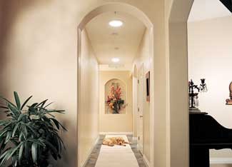

A well-lit room will brighten your mood and lighten your attitude. We love natural light, and some studies indicate we’re more productive when using natural light. For example, students learn more quickly and retail sales are improved with natural lighting. But windows aren’t a practical solution for every room in a building. Tubular skylights - also called Solatubes, Sun-Domes, Sun Tunnels and various other trademarked names - can be installed in most homes, providing pleasing, natural light and reducing the amount of electricity used for lighting.
Tubular skylights use no energy - they simply convey sunlight through the roof to the inside of the house. Light is collected into a clear dome and bounced through a coated metal tube to a diffuser lens in the ceiling. Some devices are designed with flexible tubing so installation around obstacles in the attic is easier. You can even route tubes through walled-in boxes to add natural light to a basement or the first floor of a two-story building.
A single device can light a space of 100 to 600 square feet. The light will be somewhat variable, of course, depending on cloud cover, time of day and the position of the dome on your roof. The size of the device also determines how much light is brought inside the house. Sizes range from 10 to 22 inches in diameter.
Natural light is not as harsh as incandescent or fluorescent light. And the diffusers on tubular daylighting devices scatter the rays so the light doesn’t cast harsh shadows. Although the full spectrum of light is allowed inside, ultraviolet (UV) rays are blocked, so furniture and carpets won’t fade from the additional natural light.
And allowing natural light into dim rooms may improve your attitude. Plus it’s much better light for plants.
Skylights allow natural light into dimly lit rooms, too. But the light is direct, leaving some areas of the space brightly lit and others in shadow. Skylights allow rooms to be warmed by the sun during the day and heat to escape at night (just like a window). But tubular daylighting devices prevent this type of heat gain and loss.
Optional dimmers are available for most tubular daylighting devices. These allow you to “turn down the lights” if you want to darken a room.
A basic tubular daylighting device (with an eight-foot tube from roof to ceiling) can cost as little as $170. If you have the right tools and DIY experience, you might be able to install the device in as little as two hours (or it may take a day). But if you’re uncomfortable with the idea of cutting a hole in your roof, hire a professional. Larger models start at about $400.
You can also incorporate special features such as electric lights (to use if the sun isn’t shining), a vent system or additional diffuser options to change the effects of the light.
For more on tubular daylighting devices, read Sunshine from a Tube.|
 SOLATUBE Tubular daylighting devices can bring natural light into spaces where windows aren’t possible. |
|
|